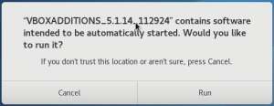
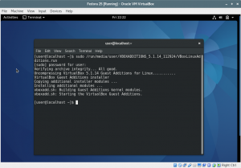

Installing the Guest Additions
VirtualBox Guest Additions are device drivers and system applications that help to optimize the operating system installed inside the VM, useful for better performance and usability, like a better mouse and keyboard integration, window scaling and resizing, better video performances, and clipboard integration. Guest Additions need to be installed inside the VM, not on your host OS.
Then let’s insert the Guest Additions CD, by clicking on Devices -> Insert Guest Additions CD image… A window should appear asking you if you want to allow autorun of the CD content.

Click on "Cancel" because you need to install some additional packages in order to fully install the Guest Additions.
Open a terminal and type, even if some packages may be already installed:
sudo dnf -y install gcc automake make kernel-headers kernel-devel perl
Once finished, actually install the Additions by running the script
sudo /run/media/user/VBOXADDITIONS*/VBoxLinuxAdditions.run

Reboot the VM.